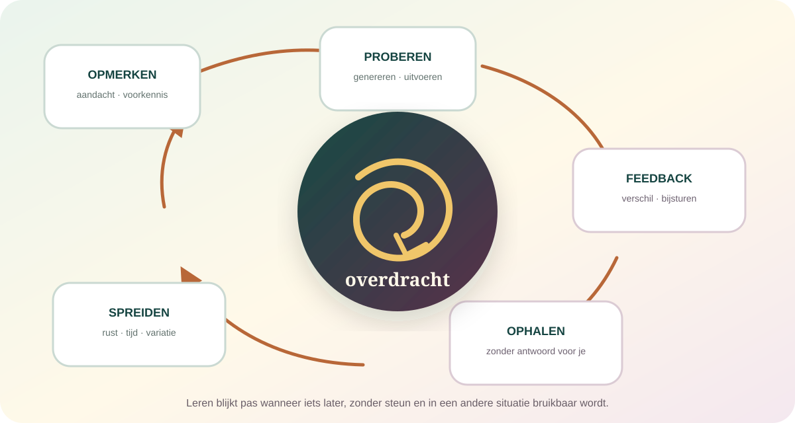

De kern in gewone taal
Leren is niet wat er tijdens het studeren gebeurt. Leren is wat later nog beschikbaar en bruikbaar blijkt.
Je ontmoet informatie of een probleem, koppelt het aan voorkennis, probeert iets, merkt verschil tussen verwachting en uitkomst en stelt je handelen bij. Herhaling, ophalen, rust en variatie veranderen welke route later bereikbaar wordt. Een soepel lesmoment kan leren ondersteunen, maar het gevoel “ik snap het” is geen bewijs dat kennis morgen zonder voorbeeld terugkomt.
Hulp, voorbeelden en herhaling kunnen prestaties nu verbeteren zonder dat je het later zelfstandig kunt.
Ophalen en spreiden voelen vaak stroever dan herlezen, maar kunnen langduriger beschikbaarheid opbouwen.
Veiligheid, tijd, taal, feedback, voorkennis en materiële ruimte bepalen mee welke poging mogelijk wordt.
Kennis wordt niet overgegoten. Ze wordt opgebouwd, getest en opnieuw georganiseerd.
De oude pagina beschreef leren als opnemen, verwerken, opslaan en toepassen. Dat klinkt ordelijk, maar verbergt hoeveel terugkoppeling er is. Wat je al weet bepaalt wat je opmerkt. Een poging verandert welke feedback betekenis krijgt. Ophalen verandert geheugen. Een nieuwe situatie toont pas welke delen flexibel genoeg zijn geworden.

Breinverandering is geen marketingbewijs: ieder duurzaam leren heeft een biologische kant, maar een meetbaar hersenverschil zegt niet vanzelf dat een methode goed, diep of wenselijk is. Gedrag en context blijven nodig om te begrijpen wat veranderde.
“Leren” verzamelt heel verschillende veranderingen onder één woord.
Feiten en begrippen
Wat weet en begrijp je?
Woorden, relaties, verklaringen en modellen worden verbonden met bestaande semantische kennis.
Vaardigheden
Wat kun je uitvoeren?
Typen, spreken, tekenen en opereren vragen oefening, timing en sensorische feedback.
Associatief leren
Wat voorspelt wat?
Signalen krijgen betekenis doordat ze gebeurtenissen, beloning, dreiging of andere uitkomsten voorspellen.
Statistisch leren
Welke regelmaat pik je op?
Taal, beweging en sociale situaties bevatten patronen die vaak zonder expliciete uitleg worden geleerd.
Sociaal leren
Wat leer je van anderen?
Imitatie, gezamenlijke aandacht, uitleg, normen en samenwerking bepalen wat zichtbaar en uitvoerbaar wordt.
Zelf leren sturen
Weet je wat je nog niet kunt?
Metacognitie helpt plannen, controleren en een strategie veranderen — maar zelfinschatting kan misleiden.
Deze vormen steunen op deels overlappende systemen. Een regel kunnen uitleggen, haar herkennen in een voorbeeld en haar onder tijdsdruk toepassen zijn daarom geen identieke prestaties.
Leren begint niet bij informatie. Het begint bij wat jouw huidige systeem ermee kan doen.
Opmerken
Aandacht en verwachting selecteren welke kenmerken diep genoeg worden verwerkt.
Verbinden
Nieuwe informatie krijgt houvast in voorbeelden, begrippen en ervaringen die al beschikbaar zijn.
Genereren
Zelf een antwoord, voorspelling of handeling proberen maakt hiaten en aannames zichtbaar.
Bijstellen
Feedback helpt bepalen welk verschil relevant was en wat bij een volgende poging moet veranderen.
Ze versnelt begrip en maakt diepere vragen mogelijk. Ze kan nieuwe informatie ook vervormen wanneer een oud model te sterk bepaalt wat je verwacht te zien.
Een antwoord opnieuw zien en een antwoord zelf terugvinden oefenen niet hetzelfde.
Herlezen geeft herkenning en kan begrip ondersteunen. Maar wanneer je zonder antwoord voor je probeert terug te halen, oefen je precies de route die je later nodig hebt. Een brede review uit 2022 beschrijft stevige ondersteuning voor ophalen en spreiden, terwijl recenter onderzoek toont dat taakbelasting en werkgeheugen bepalen hoeveel een leerling ervan profiteert.
“Ja, dit heb ik gezien.”
Vloeiende verwerking voelt vertrouwd. Dat gevoel kan correcte kennis weerspiegelen, maar ook de aanwezigheid van het antwoord.
“Kan ik het zonder aanwijzing bouwen?”
Een poging maakt toegangsroutes sterker en toont concreter welk onderdeel nog ontbreekt.
Geen testcultuur als conclusie: laagdrempelig oefenen met feedback is iets anders dan examens met hoge inzet. Toetsangst, werkgeheugenbelasting en onbekend materiaal kunnen een nuttige moeilijkheid in overbelasting veranderen.
Vergeten tussen pogingen is niet alleen verlies. Het kan de volgende poging leerzamer maken.
Wanneer oefening over tijd wordt verdeeld, moet een spoor telkens opnieuw worden opgebouwd. Dat kost meer moeite dan alles in één sessie herhalen en voelt daardoor minder productief. Juist die terugkerende toegangspogingen, gecombineerd met consolidatie en wisselende context, kunnen langduriger leren ondersteunen.
Keer terug vóór alles weg is — maar niet meteen.
De passende tussenruimte hangt af van materiaal, voorkennis en hoe lang je iets wilt bewaren.
Oefen kiezen, niet alleen uitvoeren.
Door verwante probleemtypes te mengen moet je herkennen welke aanpak past, in plaats van een reeks identieke stappen te herhalen.
Verander voorbeeld en context.
Variatie kan relevante structuur zichtbaar maken en voorkomt dat één oppervlakkig kenmerk de oplossing weggeeft.
Stoppen is deel van het proces.
Slaap en stille tussenperiodes ondersteunen consolidatie; doorwerken is niet altijd extra leren.
Fouten zijn informatie, maar alleen wanneer de situatie ze leesbaar maakt.
Manu Kapur onderzoekt leerontwerpen waarin leerlingen eerst complexe oplossingen proberen en daarna gerichte instructie krijgen. De eerste poging kan voorkennis activeren en kritieke kenmerken zichtbaar maken. Het productieve deel komt niet uit falen op zichzelf, maar uit taakontwerp, vergelijking, uitleg en de instructie die erop volgt.
Een poging
Maak je huidige model zichtbaar.
Zelf voorspellen of oplossen onthult welke relatie je wel en nog niet begrijpt.
Een verschil
Wat ging anders dan verwacht?
Feedback werkt beter wanneer ze informatie geeft over taak, proces of volgende stap, niet alleen over de persoon.
Een verklaring
Waarom past het betere antwoord?
Correctie zonder reden kan een losse regel opleveren die buiten hetzelfde voorbeeld opnieuw faalt.
Een nieuwe poging
Kan je bijsturing uitvoeren?
Zonder gelegenheid om feedback toe te passen blijft ze gemakkelijk commentaar in plaats van leren.
Schaamte is geen didactische techniek: publieke vernedering kan dreiging en vermijding oproepen. Veilig leren betekent niet dat iedere taak makkelijk is; het betekent dat fouten geen bewijs worden dat iemand als mens tekortschiet.
Iets geoefend hebben betekent nog niet dat je weet wanneer je het elders moet gebruiken.
Oefenen verbetert vaak vooral wat op de oefening lijkt. Overdracht vraagt dat je de relevante structuur herkent terwijl oppervlakkige kenmerken veranderen. Een rekensom in een boek, een budgetbeslissing thuis en een grafiek in het nieuws kunnen hetzelfde principe vragen zonder hetzelfde gezicht te hebben.
Die keuze vraagt voorbeelden én tegenvoorbeelden, vergelijking, taal voor het onderliggende principe en oefening in uiteenlopende omstandigheden.
Daarom maken generieke “brain games” of één denkstrategie je niet automatisch algemeen slimmer. Overdracht groeit meestal vanuit domeinkennis en zorgvuldig gevarieerde toepassingen.
Een prettige studiesessie kan misleiden. Een moeilijke sessie ook.
“Dit gaat gemakkelijk, dus ik ken het.”
Herhaling en een duidelijk voorbeeld verlagen inspanning. Soms toont dat expertise; soms leunt de prestatie volledig op aanwezige steun.
“Dit voelt slecht, dus ik leer niets.”
Een haalbare ophaalpoging kan moeilijk voelen en toch nuttig zijn. Maar verwarring zonder voorkennis, tijd of feedback blijft gewoon verwarring.
“Desirable difficulties” zijn geen uitnodiging om onderwijs willekeurig lastig te maken. Een moeilijkheid is pas wenselijk wanneer ze het bedoelde proces activeert, bij de leerling past en later leren verbetert.
Motivatie is geen brandstof die volledig in de leerling wordt geproduceerd.
Interesse, waarde, gevoel van bekwaamheid en autonomie beïnvloeden inspanning. Maar een helder doel, passende moeilijkheid, steun, rust en toegang tot materiaal veranderen eveneens wat iemand kan volhouden. “Wil het harder” is daarom geen leerstrategie.
Vermogens zijn niet volledig vast.
Die boodschap kan mogelijkheden openen wanneer er geloofwaardige strategieën, steun en kansen bestaan.
Een overtuiging vervangt geen omstandigheden.
Meta-analyses discussiëren over kleine en heterogene effecten. Een mindset mag geen manier worden om armoede, discriminatie of slecht onderwijs aan de leerling toe te schrijven.
Plastisch is niet onbeperkt maakbaar: mensen kunnen op iedere leeftijd leren, maar tempo, voorkennis, gezondheid, tijd en biologische grenzen verschillen. Hoop wordt geloofwaardiger wanneer ze met middelen wordt verbonden.
Je leert niet alleen van anderen. Je leert ook wat een gemeenschap de moeite waard vindt.
Uitleg, modelleren, gesprek en gezamenlijke aandacht maken kennis toegankelijk. Tegelijk leren mensen impliciete normen: wie mag spreken, welke taal geldt als slim, welke fout wordt verdragen en wiens ervaring als bewijs telt. Dat verborgen curriculum vormt deelname naast de officiële inhoud.
Een ander maakt een handeling zichtbaar.
Niet alleen het resultaat, ook keuzes, twijfel en correctie kunnen worden voorgedaan.
Taal maakt relaties bespreekbaar.
Een goede verklaring verbindt voorbeeld, principe en reden zonder de leerling tot passieve ontvanger te maken.
Verschil kan een model openbreken.
Vergelijking van perspectieven helpt wanneer deelname veilig is en niet één stem al het risico draagt.
Identiteit beïnvloedt poging.
Wie verwacht als onbekwaam te worden gelezen, betaalt extra aandacht aan dreiging, reputatie en zelfbescherming.
Een efficiënte leertechniek kan niet bepalen welk onderwijs goed is.
Gert Biesta bekritiseert “learnification”: spreken over leren alsof inhoud, doel en relatie al vaststaan. Onderwijs kwalificeert, socialiseert en kan mensen helpen als subject van hun eigen leven te handelen. Die doelen kunnen botsen.
Welke kennis en vaardigheid heb je nodig?
Onderwijs opent toegang tot praktijken, beroepen en manieren om de wereld te begrijpen.
Wat moet iemand kunnen?Tot welke wereld word je ingeleid?
Tradities, normen en omgangsvormen worden doorgegeven — bewust én als verborgen curriculum.
Waar leer je bij horen?Kan je zelf antwoorden en handelen?
Een leerling is niet alleen materiaal voor meetbare interventies, maar iemand die zich tot de wereld verhoudt.
Wie mag je worden?Wie bepaalt de maatstaf?
Toetsen en curricula maken sommige kennis zichtbaar en andere stil. Neutraliteit moet daarom worden onderzocht, niet aangenomen.
Wie profiteert van de norm?Wat je beter niet als leerwet doorvertelt.
“Ieder heeft één leerstijl.”
Mensen hebben voorkeuren, maar onderwijs afstemmen op een vast visueel, auditief of kinesthetisch type heeft geen stevige algemene basis.
“Tienduizend uur maakt iedereen expert.”
Gerichte oefening draagt bij, maar verklaart prestaties niet volledig. Kwaliteit, beginleeftijd, begeleiding, kansen en domein verschillen.
“Stress blokkeert leren.”
Effecten hangen af van timing, intensiteit, controle, taak en persoon. Een meta-analyse vond gemiddeld zwakkere effecten dan vaak wordt aangenomen.
“Je moet alleen geloven dat je kunt groeien.”
Een veranderbaar mensbeeld kan helpen, maar overtuiging zonder effectieve strategie, steun en gelegenheid verplaatst verantwoordelijkheid.
Wie onderzoekt leren buiten de oude schoolboekrijtjes?
Shana Carpenter, Steven Pan & Andrew Butler
Hoe maken spreiden en ophalen kennis duurzaam?
Verbinden laboratoriumonderzoek met onderwijs en benadrukken dat timing, materiaal en implementatie de uitkomst mee bepalen.
Pooja Agarwal
Hoe wordt ophalen een leeractiviteit zonder examendreiging?
Onderzoekt laagdrempelige retrieval practice in echte klascontexten met feedback en gelijke deelname.
Manu Kapur
Wanneer bereidt een mislukte poging iemand voor op begrip?
Toont dat genereren vóór instructie krachtig kan zijn wanneer vergelijking en gerichte uitleg zorgvuldig volgen.
Nate Kornell
Waarom kiezen leerlingen strategieën die goed voelen maar minder beklijven?
Bestudeert metacognitieve illusies, spreiden en hoe mensen hun eigen leren voorspellen.
Mary Helen Immordino-Yang
Waarom is betekenis geen extraatje naast cognitie?
Onderzoekt hoe emotie, identiteit, cultuur en sociaal denken bijdragen aan diep en langdurig leren.
Alison Gopnik
Waarom leert exploratie anders dan doelgerichte oefening?
Benadert kinderen als krachtige ontdekkers en vergelijkt brede verkenning met efficiënt uitvoeren.
David Yeager
Wanneer kan een psychologische boodschap werkelijk landen?
Onderzoekt heterogene effecten van mindset en sociale interventies in grootschalige onderwijscontexten.
Brooke Macnamara & Alexander Burgoyne
Hoe groot zijn populaire leereffecten wanneer bewijs streng wordt gewogen?
Toetsen claims over deliberate practice en groeimindset en houden publicatiebias en methodologische kwaliteit zichtbaar.
Wie vraagt wat buiten een leerscore verdwijnt?
Gert Biesta
Leren wat, waarom en van wie?
Waarschuwt dat de taal van “leren” inhoud en doel onzichtbaar kan maken en verdedigt onderwijs als kwalificatie, socialisatie én subjectwording.
bell hooks
Kan een klas vrijheid oefenen in plaats van gehoorzaamheid?
Beschrijft betrokken pedagogiek als intellectueel, relationeel en lichamelijk, met stem en ervaring zonder kennis tot mening te reduceren.
Vanessa Machado de Oliveira
Welke wereldbeelden worden door onderwijs normaal gemaakt?
Onderzoekt koloniale patronen, global education en de moeilijkheid om een systeem met zijn eigen vanzelfsprekendheden te veranderen.
Tyson Yunkaporta
Wat mist leren wanneer kennis van land, relatie en verhaal wordt losgemaakt?
Daagt westerse scheidingen tussen kennis, plaats en gemeenschap uit en vraagt wie als kenner wordt erkend.
Geen bewijsverwarring: dit zijn filosofische, pedagogische en culturele perspectieven. Ze beantwoorden vragen die een geheugenexperiment niet kan oplossen, maar worden zelf ook besproken en bekritiseerd.
Test leren, niet hoe lang je naar een pagina kunt kijken.
- 1Kies één klein begrip.
Neem iets dat nuttig is en net buiten je huidige bereik ligt.
- 2Schrijf vóór het lezen wat je denkt.
Een voorspelling maakt voorkennis en misverstanden zichtbaar.
- 3Bestudeer één goede uitleg met voorbeeld.
Zoek het onderliggende principe, niet alleen de stappen.
- 4Sluit de bron en haal het op.
Leg het in eigen woorden uit en noteer waar de route stopt.
- 5Vergelijk en corrigeer precies.
Markeer het verschil tussen jouw model en de bron.
- 6Plan morgen een ander voorbeeld.
Gebruik hetzelfde principe in een nieuwe situatie zonder eerst terug te kijken.
Niet “hoe slim voelde ik mij?”, maar: wat kon ik zonder steun terugvinden, welke fout begreep ik en waar werkte het principe nog?
Wanneer verder kijken?
Een leerprobleem is niet automatisch een gebrek aan inzet.
Aanhoudende problemen kunnen samenhangen met zicht, gehoor, taal, slaap, aandacht, stemming, pijn, medicatie, neurologische of specifieke leerstoornissen en met de kwaliteit of toegankelijkheid van instructie. Plots verlies van eerder beheerste vaardigheden of nieuwe verwardheid vraagt medische beoordeling. Een online leerstijltest kan die context niet vervangen.
Waarop dit dossier steunt.
- Spreiden en ophalen · 2022Carpenter, Pan & Butler — The science of effective learning
Over robuuste effecten, implementatie, metacognitie en open vragen rond spacing en retrieval practice.
- Onderwijsreview · 2024Trumble et al. — Distributed and retrieval practice
Systematische review in gezondheidsopleidingen met aandacht voor uiteenlopende interventies.
- Belastingsgrens · 2023Zheng, Sun & Liu — Retrieval practice is costly
Toont dat werkgeheugencapaciteit en taakbelasting het voordeel van ophalen kunnen begrenzen.
- Productive failure · 2023Kapur, Saba & Roll — Prior achievement and inventive production
Onderzoekt voor wie en onder welke voorwaarden genereren vóór instructie helpt.
- Feedback · 2020Wisniewski, Zierer & Hattie — The Power of Feedback Revisited
Meta-analyse van 435 studies; feedbackeffecten verschillen sterk naar inhoud en informatieniveau.
- Groeimindsetkritiek · 2023Macnamara & Burgoyne — Do growth mindset interventions impact achievement?
Systematische review en meta-analyse over effectgrootte, bias en methodologische kwaliteit.
- Groeimindsetvoorwaarden · 2023Burnette et al. — For whom, how and why might interventions work?
Een andere meta-analytische lezing van heterogene effecten en mogelijke moderatoren.
- Gerichte oefening · 2014Macnamara, Hambrick & Oswald — Deliberate practice and performance
Oefening verklaart betekenisvolle maar sterk domeinafhankelijke delen van prestatieverschillen.
- Stress en geheugen · 2022McManus et al. — Psychosocial stress and episodic memory
Meta-analyse vindt gemiddeld kleinere en timingafhankelijke effecten dan eenvoudige blokkademodellen suggereren.
- Leerstrategieën · 2018Weinstein, Sumeracki & Caviglioli — Teaching the science of learning
Over spreiden, afwisselen, ophalen, uitwerken, concrete voorbeelden en dual coding.
- Doel van onderwijs · 2020Biesta — Risking Ourselves in Education
Kritiek op learnification en herneming van kwalificatie, socialisatie en subjectwording.
- Kritische toepassing · 2024Juvonen et al. — Purposes of Education
Past Biesta’s drie doelen toe en maakt verborgen curriculum en uitsluiting concreter.
- Betrokken pedagogiek · 2003bell hooks — Teaching Community
Benadert leren als een relationele praktijk waarin stem, ervaring, kennis en vrijheid samen op het spel staan.
- Dekoloniale kritiek · 2021Vanessa Machado de Oliveira — Hospicing Modernity
Onderzoekt hoe moderne vanzelfsprekendheden ons leren, handelen en verbeelden begrenzen.
- Inheemse kennissystemen · 2019Tyson Yunkaporta — Sand Talk
Verbindt leren en herinneren opnieuw met land, relatie, verhaal en collectieve kennispraktijken.
We behandelen experimentele leerwetenschap, meta-analyses en onderwijsfilosofie als verschillende soorten kennis volgens ons bronnenbeleid. Geen enkele techniek werkt los van inhoud, persoon, doel en context.